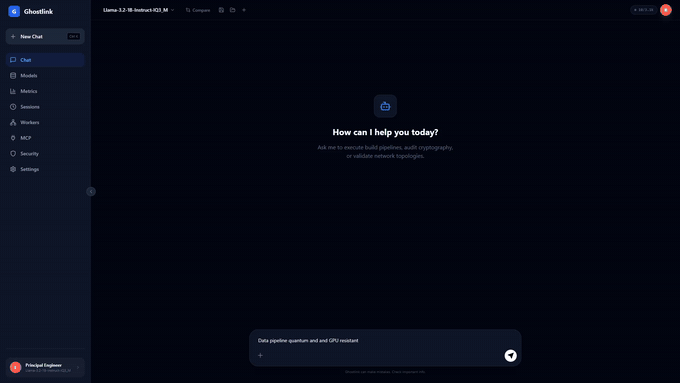

Point Ghostlink at every machine on your LAN and it becomes one inference cluster —
correctly sized, authenticated, and observable — with zero YAML and no manual
--rpc flags.
End to end, running Llama 3.2 1B locally through Ghostlink's native llama.cpp backend.

The full-length recording (with audio) is available in the project repo.
Nobody else combines zero-config discovery of heterogeneous consumer/prosumer hardware with real distributed inference across it.
Opt in a node's spare GPU/CPU and a request automatically splits across it via llama.cpp's own RPC backend — zero-config, no manual --rpc flags.
Layer assignment across mixed compute environments (CPU, GPU, NPU), sized from each node's actually-detected VRAM and compute capability.
SPSC ring-buffer transport with spin-wait for in-process hand-off, plus TCP and Unix domain socket transport for multi-process pipelines.
UDP broadcast and mDNS cluster discovery find every Ghostlink instance on the LAN automatically — no manual peer configuration.
Session-level authentication on transport frames, bearer-token API auth, optional PQC-hybrid TLS, and rate limiting on the control-plane gateway.
Monaco-based Editor tab with copilot-style Explain/Fix/Refactor, diff preview before anything is written, multi-file refactor, and repo-aware chat via local RAG indexing.
See docs/COMPARISON.md for the full breakdown and docs/BENCHMARKS.md for real measured runs, not just prose.
| Platform | Best for | Weakness Ghostlink addresses |
|---|---|---|
| Ghostlink | Zero-config distributed inference across heterogeneous LAN hardware | Early-stage ecosystem; LAN only, no relay/WAN mode yet |
| vLLM / TensorRT-LLM | Datacenter-grade single/multi-GPU serving | Assumes homogeneous, co-located GPUs; no zero-config LAN clustering |
| Ollama | Single-node local model serving | No real multi-node distribution; no cluster discovery |
| LM Studio | Desktop-first local chat/inference | Single machine only, closed-source, not API-extensible |
| llama.cpp server | Lightweight single-binary inference | No orchestration, discovery, or cluster layer — Ghostlink wraps this as a backend |
| Kubernetes-based (KServe, Triton) | Large fleets, org-wide model serving | Needs a cluster and an ops team — overkill for a household/small-team LAN |
Three commands, one launcher, no manual service wiring.
# Requires: Rust, Node.js, CMake, Git
git clone https://github.com/rwilliamspbg-ops/Ghostlink.git
cd Ghostlink
# One-time backend build
cargo build --release -p ghost-link
# Single launcher for the full stack
.\launch.bat# Requires: Rust, Node.js, curl (cmake optional)
git clone https://github.com/rwilliamspbg-ops/Ghostlink.git
cd Ghostlink
cargo build --release -p ghost-link
./launch.sh
This starts llama-server (inference), the Ghostlink API, a Go control-plane gateway,
and the React frontend at http://127.0.0.1:5173 — opened automatically.
Then: Models → load a model → Chat.
Full walkthrough in the README.
Auto-detects available accelerators at startup — grounded in
system_profile.rs.
| Accelerator | Windows | Linux | macOS |
|---|---|---|---|
| CUDA (NVIDIA) | ✓ | ✓ | partial |
| DirectML (AMD iGPU, Intel ARC, any DX12) | ✓ | — | — |
| ROCm (AMD discrete) | — | ✓ (feature flag) | — |
| Vulkan (generic fallback) | ✓ | ✓ | ✓ |
| Metal (Apple Silicon) | — | — | ✓ |
| NPU (AMD XDNA, Intel, Qualcomm) | ✓ | ✓ | Neural Engine |
| CPU | ✓ | ✓ | ✓ |
Rendered on GitHub for the best reading experience.